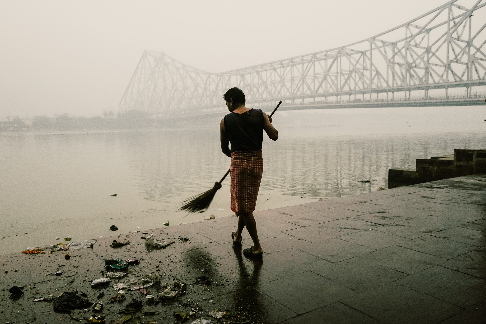
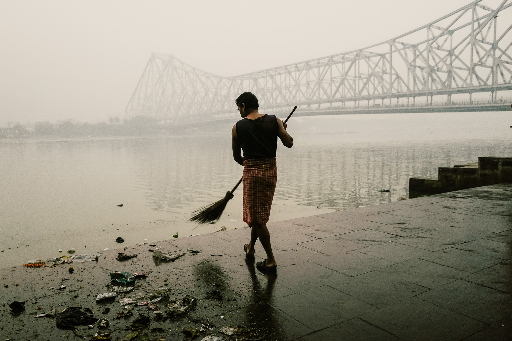

Kolkata - Varanasi Photo Tour
Embark on a captivating journey to India, delving deep into its vibrant life, rich culture, and enchanting festivals. Join renowned Indian photographer, Shivam, and esteemed Australian photographer, Seng, on an extraordinary photography tour that will take you through the bustling streets of Kolkata and the mystical alleys of Varanasi. Together, you will witness and document two extraordinary festivals: Chhath Puja in Kolkata and Dev Diwali in Varanasi.
Prepare yourself for an immersive experience that will not only expand your photographic skills but also provide an intimate glimpse into the heart and soul of India.
Discover uniquness of Kolkata
Kolkata, with its blend of old and new, offers a perfect landscape for street and documentary photography. The city showcases colonial streets, courtyards, alleyways, and riverside ghats bathed in sunlight. Unlike popular tourist destinations like Delhi, Agra, and Rajasthan, Kolkata remains unspoiled by mass tourism, providing an authentic experience for travellers and photographers.
Discover Heritage of Varanasi
Varanasi, located on the banks of the River Ganges, is the oldest living city in human history. This holy city preserves centuries-old traditions and devotions on its ghats, while its bustling backstreets exude a vibrant interplay of light and life. Varanasi captures the raw essence of humanity and abounds with captivating stories of human lives, spirituality, and faith.
Meet your Guides
Join Shivam Pandey, a street and documentary photographer, and Seng Mah, a travel and documentary photographer, as they guide you through this photography tour. With their expertise, you will learn how to capture unique scenes, utilize light, compose stronger images, and connect with the people you photograph. This tour is perfect for those passionate about travel and documentary photography, seeking layered street photography environments, wanting to tell stories through their images, and enjoying off-the-beaten-path travel experiences with immersive opportunities to engage with local communities, festivals, and people.
This photography tour is definitely for you if you
If you're an avid travel and documentary photographer, looking to capture truly unique scenes and moments in your body of work, this photography tour is the ideal choice. With a focus on street photography, you'll explore environments teeming with layers and endless visual potential. Gain valuable insights on how to skillfully tell stories through your photography. Embark on off-the-beaten-path travel experiences that offer remarkable photographic rewards. Immerse yourself in the local communities, festivals, and people, enjoying truly immersive travel encounters. Join us on this photography tour tailored for passionate photographers like you.
Highlights of the tours include
KOLKATA : Days 1 - 4
"If you desire a clean and green city, stick to Delhi. For a rich and impersonal city, head to Bombay. If you seek a hi-tech, beer-filled place, Bangalore is your destination. But if you long for a city with a soul, come to Kolkata."
Our tour commences with your pickup from Netaji Subhas Chandra Bose International Airport, followed by a transfer to our hotel in Kolkata via a minibus. This heritage hotel, constructed in the late 1700s, is nestled in the heart of the city. Just a stone's throw away, you'll find bustling streets, vibrant markets, chai stalls, and eateries. With four days in Kolkata, you'll have ample time to immerse yourself in the ambiance and energy of this incredible city.
 

VARANASI : Days 5 - 9
"The city brings forth truth and unveils reality. It doesn't introduce new marvels to the field of vision, but enables one to perceive what already exists." (Diana L. Eck, Professor)
On Day 5 of our journey, we will board a domestic flight from Kolkata to Varanasi. Upon arrival at Lal Bahadur Shastri International Airport in Varanasi, we will be transferred to our hotel by mini bus. The hotel is conveniently situated near Assi Ghat (approximately 1 - 1.5 hours away from the ghats, depending on traffic). This specific hotel has been chosen due to its close proximity to the bustling ghats, ensuring easy access for us throughout our stay.


Itinerary for Kolkata Varanasi Photography Tour
Day 0
- Arrival at Netaji Subhas Chandra Bose International Airport
- Transfer to our heritage hotel in Kolkata
- Explore the bustling streets, vibrant markets, chai stalls, and eateries near the hotel
- Overnight stay in Kolkata
Day 1
- Morning excursion to the ghats for Chhath Puja photography at sunrise
- Capture the spirit, colours, and devotion of the festival on the ghats of the Hooghly River
- Immerse yourself in the serene moments of faith and purity amidst the lively atmosphere
- Afternoon exploration of the narrow alleys and hidden corners of Kolkata
- Photograph the vibrant street scenes, street barbers, food stalls, and iconic yellow taxis
- Overnight stay in Kolkata
Day 2
- Witness the mesmerising sunrise from the ghats along the Hooghly River
- Observe priests and devotees offering prayers and bathing in the sacred waters
- Capture reflections and activities unfolding as the tide recedes
- Visit the charming Lebutalla neighbourhood
- Photograph the hand-pulled rickshaws and elegant backdrops of its streets
- Immerse yourself in the local ambiance and capture the essence of daily life
- Overnight stay in Kolkata
Day 3
- Visit the Mullick Ghat Flower Market
- Capture the kaleidoscope of colours as vibrant flowers are bought and sold
- Experience the interplay of light and shadow under the bridges
- Photograph the bustling market scenes and the dedicated vendors
- Explore the metal market, witness workers carrying metalware, and play with light and shadow
- Photograph the resilience and labour of these individuals
- Afternoon visit to the outdoor wrestling hall near the Howrah Bridge
- Capture environmental portraits and dynamic wrestling shots
- Witness impressive displays of strength against the iconic backdrop
- Overnight stay in Kolkata
Day 4
- Visit Kumartulli, the neighbourhood of potters and clay sculptors
- Observe the artists at work as they bring Hindu deities to life
- Witness the process of idol-making and the dedication of the artisans
- Photograph the transformation of clay into beautiful sculptures
- Immerse yourself in the artistic creativity and symbolism of the area
- Transfer to Netaji Subhas Chandra Bose International Airport for departure
Day 5
Day 6
- Early morning boat ride on the River Ganges at sunrise
- Capture the soft, golden light illuminating the ghats and the ancient city
- Photograph the rituals, bathing, prayers, and offerings on the ghats
- Chance to capture environmental portraits of a sadhu (holy man) on the boat
- Walking tour of the ghats, witnessing the vibrant spiritual life and daily activities
- Explore the back streets and lanes of Varanasi, interacting with locals and capturing daily life moments
- Overnight stay in Varanasi
Day 7
- Evening experience of the Ganga Aarti ritual on the ghats
- Witness the devotions, fire, and prayers performed by Brahmin priests
- Capture the spiritual atmosphere and the mesmerising spectacle of the ceremony
- Overnight stay in Varanasi
Day 8
- Morning exploration of the back streets and lanes of Varanasi
- Photograph street scenes, chai stalls, and daily life moments
- Learn techniques to use the setting and light effectively in narrow back streets
- Optional photography discussions and guidance
- Evening participation in the Dev Diwali festival celebrations
- Observe the preparation of diyas (earthenware lamps) on the ghats
- Capture the vibrant atmosphere, music, dance, and celebrations
- Experience the flickering light of hundreds of thousands of diyas on the ghats
- Witness the acts of faith and devotion as devotees make offerings and pray
- Overnight stay in Varanasi
Day 9
- Optional sunrise photography session or free time for personal exploration
- Check out from the hotel and transfer to Lal Bahadur Shastri International Airport
- Departure from Varanasi
Disclaimer : Please note that this itinerary is pre-planned and can be customised according to group preferences and time availability.
Tour Inclusions
- 8 nights accommodation in both Kolkata (The Elgin Fairlawn or similar) and Varanasi (The Kashi Residency or similar). Accommodation is at single occupancy — you have your own room with private ensuite.
- Breakfast, lunch and dinner during the course of the tour (unless otherwise noted in the tour itinerary).
- Arrival and departure airport transfers in Kolkata and Varanasi.
- Mini-bus transport in Kolkata.
- Economy return air fare from Kolkata to Varanasi (20kg baggage allowance, 7kg carry on allowance).
- Boat transport in Varanasi.
- Photography mentoring/guidance in street, documentary and travel photography by tour leaders.
- Local assistant/guide/fixer in Kolkata and Varanasi.
- Gratuities
Tour Exclusions
- International flight to Kolkata and from Varanasi. If you are departing ex Perth (Australia), we recommend booking the Singapore Airlines Perth - Kolkata flight (layover in Singapore), departing Perth on 18 November 6.40am, arriving Kolkata 10.20pm.
- Comprehensive travel insurance. All participants are required to take comprehensive travel insurance for this tour.
- Entry visa to India (around USD$25 for a eVisa if you're an Australian).
- Photographic equipment. You will need to bring/supply your own cameras, lenses, batteries, filters, memory cards and so on. A tripod is not required for this tour.
- Insurance for your photographic equipment while on tour.
- Travel vaccinations.
- Alcoholic drinks. Please note that alcohol is not available in Varanasi.
- All personal expenses and fees, including laundry, medication, incidental meals and snacks, minibar etc.
- Any transport and fees outside of the tour itinerary.
- An India sim card is available for AUD$25, which can be purchased on your behalf. Please advise when making a reservation if you would like to take up this option. The local sim card will allow you to connect to the Internet and make voice/video calls over IP. The card offers around 2GB of mobile data usage per day.